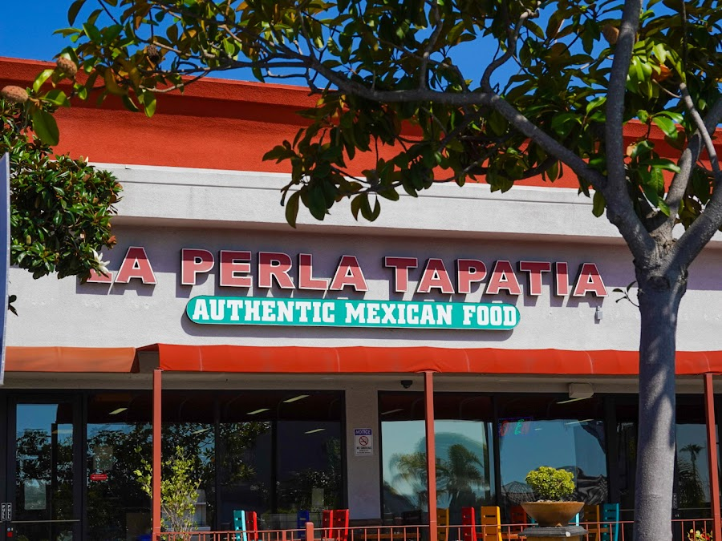
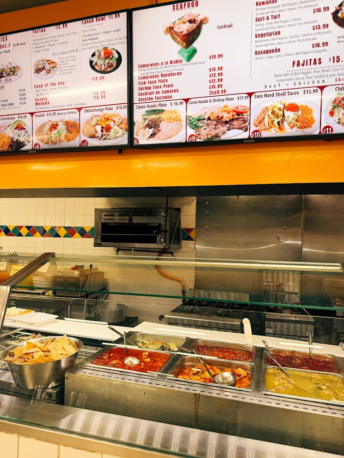
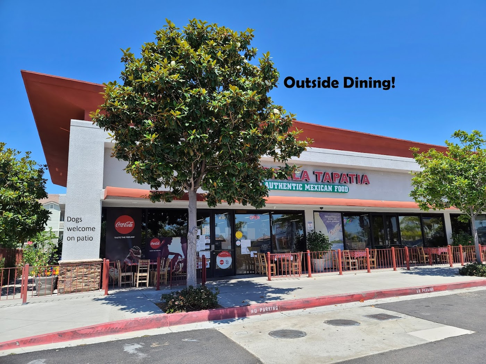
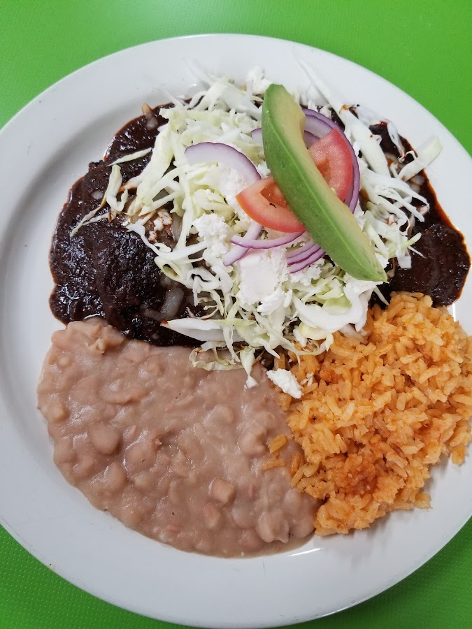

A Guadalajara-style kitchen, buffet, and bakery on Mission Ave — generous plates, hot salsas, and pan dulce baked fresh, all under one roof.

La Perla Tapatia is where Oceanside comes for the real thing — a hot kitchen, a buffet-style line you can build your plate from, a panadería case full of sweet bread, and a little Mexican market to take a piece of home with you.
The portions are famous: regulars warn that one serving is plenty for two. The green salsa hits the perfect amount of spicy, the chilaquiles come divorciados if you ask, and the pan dulce keeps people lining up like a buffet. Tapatío hospitality, the kind that makes the vibe outmatched.
Come sit inside, or grab the patio with your dog — we open at 7 in the morning and the coffee, the bread, and the comal are already going.



10/10 great food! Huge portions — one person cannot eat one of their servings. They don't charge for guacamole on food. The berry drink was huge, absolutely delicious, and only $5!
Ordered the chilaquiles plate divorciados — half red, half green — and added a piece of arrachera. Definitely a 10/10 plate. Highly recommended.
Looooved this place! The green salsa is just the perfect amount of spicy, portions are great for the price, and the people were amazing and so friendly. The vibe here is outmatched!
My go-to for pan dulce in Oceanside. This place. They have dine-in tables, and their sweet bread is the best, in my opinion.
| Monday | 7:00 AM – 10:00 PM |
| Tuesday | 7:00 AM – 10:00 PM |
| Wednesday | 7:00 AM – 10:00 PM |
| Thursday | 7:00 AM – 10:00 PM |
| Friday | 7:00 AM – 10:00 PM |
| Saturday | 7:00 AM – 10:00 PM |
| Sunday | 7:00 AM – 10:00 PM |
The plates are huge, the salsa's hot, and the pan dulce is fresh. We're open from 7am to 10pm, every single day.
Get Directions